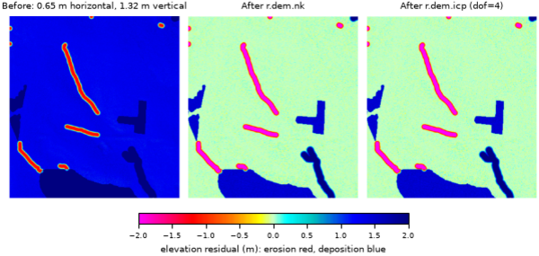

r.dem.coregister co-registers a post-event DSM to a reference DEM using pseudo ground control points (PGCPs) sampled from stable features, terrain assumed unchanged between surveys. Roads are the typical source, but any stable feature works: buildings, parking lots, or fire hydrants. It removes a robust vertical bias and can optionally chain horizontal (Nuth and Kaab) and ICP refinement.
The pgcp vector is buffered by buffer metres and rasterized,
the elevation residual dem - reference is sampled within that PGCP
mask, and a robust median vertical bias is estimated. The bias is removed with
output = dem - median_bias. Robust statistics (median bias, NMAD,
RMSE) are reported, and with the -v flag per-PGCP residuals are written to
bias_output as CSV.
If fewer than min_points PGCP samples are found the tool warns and proceeds.
These chain additional alignment after the PGCP vertical step, operating on
the PGCP-corrected DSM: nk adds a horizontal and vertical Nuth and
Kaab correction (r.dem.nk), and nk_icp further adds a
point-to-plane ICP refinement (r.dem.icp). The full chain is PGCP
vertical, then N&K, then ICP.
Both methods require a stable_mask raster (1=stable). The Nuth and Kaab method regresses the elevation difference against slope and aspect, so the mask must cover broad, sloped, unchanged terrain. The flat PGCP features used for the PGCP step are unsuitable here (they are filtered out by the N&K slope limits), so a separate stable mask must be supplied. The same mask is passed to r.dem.icp to restrict ICP to stable terrain.
This chains a point-to-plane ICP refinement (r.dem.icp) directly onto
the PGCP-corrected DSM, skipping the Nuth and Kaab step. The chain is PGCP
vertical, then ICP. Unlike nk and nk_icp,
stable_mask is optional for this method: when supplied it is passed
to r.dem.icp to restrict the alignment to unchanged terrain (recommended
in change-detection contexts); when omitted, ICP aligns over all valid
terrain.
transform_output writes the composed PGCP, N&K, and ICP transform to a file. apply_transform replays a saved transform onto another DEM, skipping the solve. This is intended for surfaces from the same acquisition (for example a DSM and a DTM): solve the alignment on the cleaner bare-earth DTM, then replay it onto the DSM so both share the same horizontal alignment. On replay the horizontal components (N&K dx, dy and ICP dx, dy, yaw) are shared, while the vertical bias is re-estimated per surface with the PGCP step, since the DSM and DTM vertical offsets differ. Replay therefore still needs pgcp but not a stable_mask.
The PGCP approach assumes the supplied features are stable reference surfaces. When using roads, choose buffer to stay within the paved surface and avoid curbs, vegetation, and vehicles. The computational region should match the input DEM resolution.
The commands below use the example scene built in the r.dem toolset manual, which is derived from the North Carolina sample dataset. Build it there first.
Remove the vertical bias from road PGCPs alone, writing the per-PGCP residuals to CSV:
g.region raster=elev_lid792_1m
r.dem.coregister dem=dsm_offset reference=elev_lid792_1m \
pgcp=pgcp_roads output=dsm_pgcp method=pgcp_vertical \
buffer=2.0 bias_output=pgcp_residuals.csv -v
Roads are flat, so the horizontal shift contributes almost nothing to the elevation residual there and the median bias recovers the applied 1.32 m:
N samples: 9725 Median bias: 1.3150 m NMAD: 0.1014 m
Chain the Nuth and Kääb step to remove the horizontal offset as well. This needs a stable_mask of broad sloped terrain, separate from the flat PGCP features:
r.dem.coregister dem=dsm_offset reference=elev_lid792_1m \
pgcp=pgcp_roads stable_mask=stable_terrain \
output=dsm_coreg method=nk

Corey T. White, Center for Geospatial Analytics, NC State University
{kind=link}